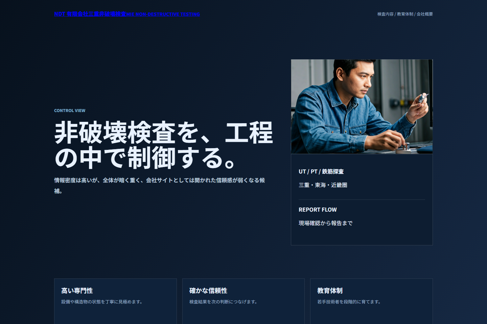
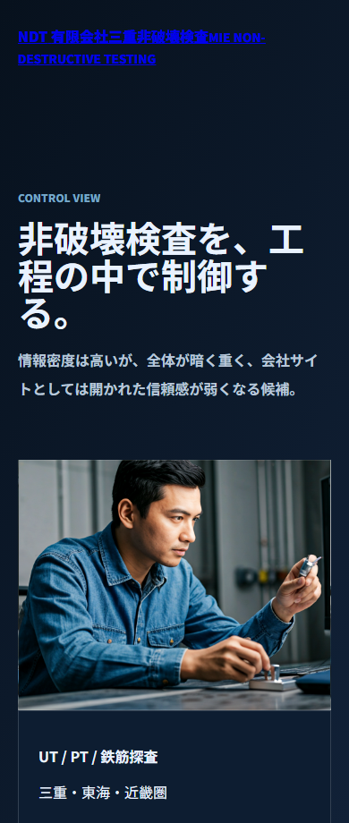

No accepted candidate: No candidate passed calibration (69/100)
Top candidate: Industrial Dark Control
Human decision: required
Design Quality Operator
No accepted candidate: No candidate passed calibration (69/100)
Top candidate: Industrial Dark Control
Human decision: required
This run did not pass calibration. Low-confidence candidate images are not shown as user-facing design output.


通常はここを見なくてよいですが、Operatorが何を落としたかを監査できます。
候補数: 3 / screenshot evidence: pass